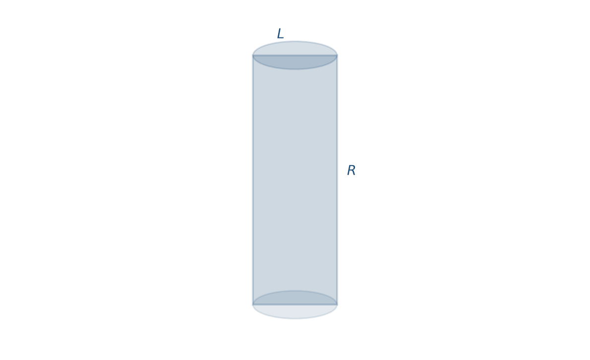
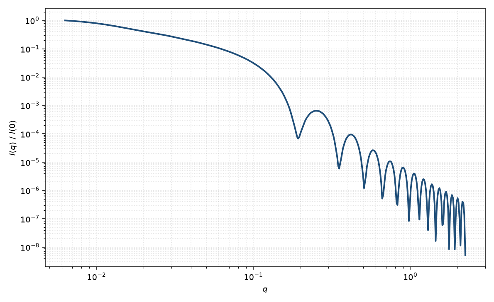

圆柱
cylinder
适用场景
当粒子可视为均匀散射长度密度的有限长直圆柱时，取向平均圆柱形式因子是棒状与盘状物体的基线模型。典型对象包括：刚性棒状胶束、短纤维与纳米棒、近似圆柱的病毒衣壳片段，以及长径比中等、截面接近圆形的胶体。
曲线判据：细长棒（$L\gg 2R$）在中间 $q$ 出现 $\sim q^{-1}$ 区，随后由半径给出的 Bessel 振荡与 Porod $q^{-4}$；扁平盘（$L\ll 2R$）中间区接近 $q^{-2}$。低 $q$ 的 Guinier 区由整体回转半径控制。截面明显椭圆、空心或径向核壳时，应改用相应变体，而不是给均匀圆柱强加额外参数。
稀溶液、相互作用可忽略时只拟合 $P(q)$。二维各向异性图案需要取向分布，而不是只用一维粉末平均。
物理图像
有限圆柱的散射振幅是沿轴的 $\mathrm{sinc}$ 因子与径向圆柱 Bessel 因子 $2J_1(x)/x$ 的乘积。Fournet 给出对圆柱轴与 $\mathbf{q}$ 夹角 $\alpha$ 的取向平均：$P(q)=\int_0^{\pi/2}|F(q,\alpha)|^2\sin\alpha\,\mathrm{d}\alpha$。约定 $P(0)=1$ 时，强度还含数密度、体积平方与衬度平方，拟合中常收进标度因子。
长度主导低–中 $q$（棒的 $q^{-1}$ 或盘的 $q^{-2}$），半径主导高 $q$ 振荡。粉末平均会抹掉二维弧上的取向信息；磁场或剪切下的二维数据必须保留 $\theta,\phi$。
示意图


核心公式
出发点
稀释、取向无规的均匀粒子，相干散射振幅是衬度对平面波相位的体积分
$$F(\mathbf{q})=\int_V \Delta\rho(\mathbf{r})\,\mathrm{e}^{i\mathbf{q}\cdot\mathbf{r}}\,\mathrm{d}^3r.$$均匀圆柱内 $\Delta\rho$ 为常数。取柱坐标，轴沿 $\hat{\mathbf{z}}$，$z\in[-L/2,L/2]$，径向 $r_\perp\le R$。令 $\alpha$ 为 $\mathbf{q}$ 与轴的夹角，则 $q_z=q\cos\alpha$、$q_\perp=q\sin\alpha$，相位分离为轴向与径向：
$$F(q,\alpha)=\Delta\rho\int_{-L/2}^{L/2}\mathrm{e}^{i q_z z}\,\mathrm{d}z\int_0^R r_\perp\,\mathrm{d}r_\perp\int_0^{2\pi}\mathrm{e}^{i q_\perp r_\perp\cos\phi}\,\mathrm{d}\phi.$$推导
轴向积分是有限长度的傅里叶变换：$\int_{-L/2}^{L/2}\mathrm{e}^{i q_z z}\,\mathrm{d}z=L\,\mathrm{sinc}(qL\cos\alpha/2)$，其中 $\mathrm{sinc}u=\sin u/u$。角向积分给出零阶圆柱 Bessel：$2\pi J_0(q_\perp r_\perp)$。径向再用标准递推 $\int_0^R r J_0(q_\perp r)\,\mathrm{d}r=(R/q_\perp)J_1(q_\perp R)$，于是
$$F(q,\alpha)=\Delta\rho\,V\cdot\frac{2J_1(qR\sin\alpha)}{qR\sin\alpha}\cdot\frac{\sin(qL\cos\alpha/2)}{qL\cos\alpha/2},\qquad V=\pi R^2 L.$$$q\to 0$ 时 $2J_1(x)/x\to 1$ 且 $\mathrm{sinc}\to 1$，故 $F(0)=\Delta\rho V$。归一化形式因子取模方后对无规取向平均（立体角元 $\sin\alpha\,\mathrm{d}\alpha$，由对称性积分到 $\pi/2$）：
$$P(q)=\frac{\displaystyle\int_0^{\pi/2}|F(q,\alpha)|^2\sin\alpha\,\mathrm{d}\alpha}{\displaystyle\int_0^{\pi/2}|F(0,\alpha)|^2\sin\alpha\,\mathrm{d}\alpha}.$$稀释极限下观测强度 $I(q)=n\langle|F|^2\rangle+B=n(\Delta\rho)^2 V^2 P(q)+B$，拟合里常把 $n(\Delta\rho)^2 V^2$ 收成 $\mathrm{scale}$。
低 $q$ 与渐近
Taylor：$2J_1(x)/x=1-x^2/8+O(x^4)$，$\mathrm{sinc}u=1-u^2/6+O(u^4)$。代入 $|F/F(0)|^2$ 并对 $\sin\alpha\,\mathrm{d}\alpha$ 平均（$\langle\sin^2\alpha\rangle=2/3$，$\langle\cos^2\alpha\rangle=1/3$）得
$$P(q)=1-q^2\Bigl(\frac{R^2}{6}+\frac{L^2}{36}\Bigr)+O(q^4).$$与 Guinier $P=1-q^2 R_g^2/3+\cdots$ 比较，立刻得到 $R_g^2=R^2/2+L^2/12$。指数形式 $I(q)\simeq I(0)\mathrm{e}^{-q^2 R_g^2/3}$ 在 $qR_g\lesssim 1$ 可用。
细长极限 $L\gg 2R$：中间区由轴向 $\mathrm{sinc}$ 在 $\alpha\simeq\pi/2$ 的贡献主导，$I\sim q^{-1}$；随后截面因子给出 Bessel 振荡，第一极小约在 $qR\approx 3.83$（$J_1$ 的第一正根）。扁平极限 $L\ll 2R$ 中间区接近 $q^{-2}$。大 $q$ 时尖锐界面给出 Porod 包络 $\sim q^{-4}$。
参数表
| 参数 | 符号 | 含义 | 单位 | 典型范围 |
|---|---|---|---|---|
| 半径 | $R$ | 圆柱截面半径 | Å 或 nm | 5–500 Å |
| 长度 | $L$ | 圆柱高度（沿轴） | Å 或 nm | 20–5000 Å |
| 极角 / 方位角 | $\theta,\phi$ | 轴相对光束的取向（二维） | 度 | 由取向分布约束 |
| 标度 | $\mathrm{scale}$ | 数密度、体积平方与衬度平方 | 与强度单位一致 | 由绝对标定或自由拟合 |
| 本底 | $B$ | 常数本底 | 与强度单位一致 | 仪器与溶剂相关 |
| 衬度 | $\Delta\rho$ | 粒子与溶剂的散射长度密度差 | Å$^{-2}$ | 由组成计算或对比实验 |
拟合注意
取向：一维数据默认粉末平均，不能单独分辨 $\theta$ 与 $\phi$。二维各向异性（磁场、剪切、拉伸）须拟合取向分布宽度；把弧向调制误读成长径比，是常见错误。
多分散：半径 Schulz/logN 分布主要抹平高 $q$ 的 Bessel 极小；长度多分散改变 $q^{-1}$ 区的跨度与 Guinier $R_g$，两者不可互换。报告均值时须声明加权方式。
磁性：核磁 SLD 与核（核散射）SLD 是不同通道。均匀磁化圆柱的磁形式因子仍是同一几何 $F(q,\alpha)$，但磁半径、死层与核半径不必相同；磁场下二维图案还含磁矩相对 $\mathbf{q}$ 的取向因子，勿与核衬度混用。
可辨识性：仅有低 $q$ 时 $R$、$L$ 与多分散强相关。要分开半径与长度，需要看到中间斜率（$q^{-1}$ 或 $q^{-2}$）以及至少一组截面振荡，或有电镜长径比。
相近模型
参考文献
- Fournet, G. Influence of the size and shape of particles on the interpretation of the X-ray diffuse diagrams. Discuss. Faraday Soc. 1951, 11, 121–125. DOI: 10.1039/DF9511100121
- Guinier, A.; Fournet, G. Small-Angle Scattering of X-rays. Wiley: New York, 1955.
- Pedersen, J. S. Analysis of small-angle scattering data from colloids and polymer solutions: modeling and least-squares fitting. J. Appl. Cryst. 1997, 30, 339–354. DOI: 10.1107/S0021889897002532